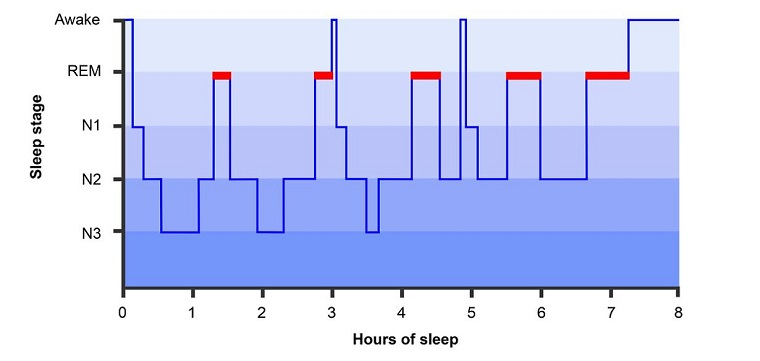
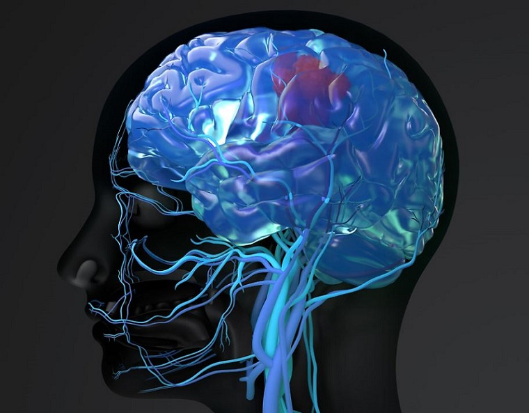

자각몽이란?
자각몽의 정의
자각몽(Lucid Dreaming)은 꿈을 꾸는 도중에 그 꿈이 실제로 꿈임을 인식하고, 꿈의 내용을 스스로 조절할 수 있는 상태를 말합니다. 자각몽을 경험한 사람들은 꿈 속에서 자유롭게 행동하거나, 원하는 대로 꿈의 장면을 바꿀 수 있습니다. 이 능력은 창의력 증진, 문제 해결 능력 향상 등 다양한 이점을 제공할 수 있습니다. 자각몽을 배우고 경험하는 것은 자신에게 놀라운 정신적 성장을 가져다줄 수 있습니다.
자각몽이 어떻게 일어날까요?
자각몽의 발생
자각몽은 수면 중 렘(REM) 수면 단계에서 주로 발생합니다. 이 단계에서는 뇌의 활동이 매우 활발하고, 꿈을 꾸기 쉬운 환경이 만들어집니다. 자각몽을 경험하려면 꿈을 꾸고 있다는 사실을 자각하는 훈련이 필요하며, 이를 통해 꿈의 내용을 제어할 수 있게 됩니다.
뇌의 활동과 자각몽
자각몽을 꾸는 동안 뇌의 활동
자각몽을 꾸는 동안 뇌는 깨어 있을 때와 비슷한 수준의 활동을 보입니다. 특히, 전두엽이 활성화되며, 이는 사고력과 계획을 담당하는 뇌의 영역입니다. 이로 인해 꿈속에서도 사고하고, 꿈의 내용을 인식하며, 그 상황을 조절할 수 있는 능력이 생깁니다.
꿈과 자각몽의 차이점
꿈과 자각몽의 차이
일반적인 꿈에서는 자아의 인식이 부족하고, 꿈 속 상황을 통제할 수 없습니다. 반면 자각몽에서는 꿈을 꾸고 있다는 사실을 자각하고, 그 경험을 조절할 수 있는 능력을 가집니다. 자각몽은 더욱 창의적이고 자유로운 꿈의 세계를 제공하며, 자아의 통제를 가능하게 합니다.